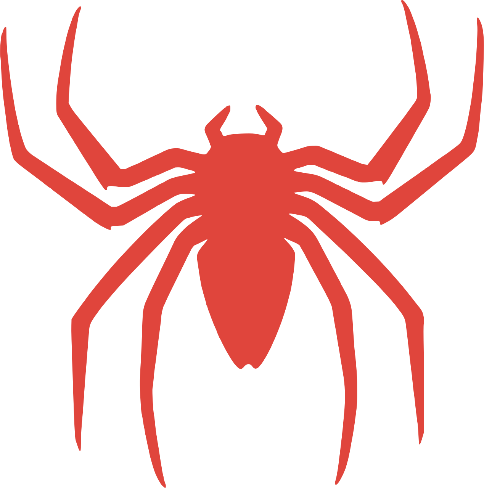
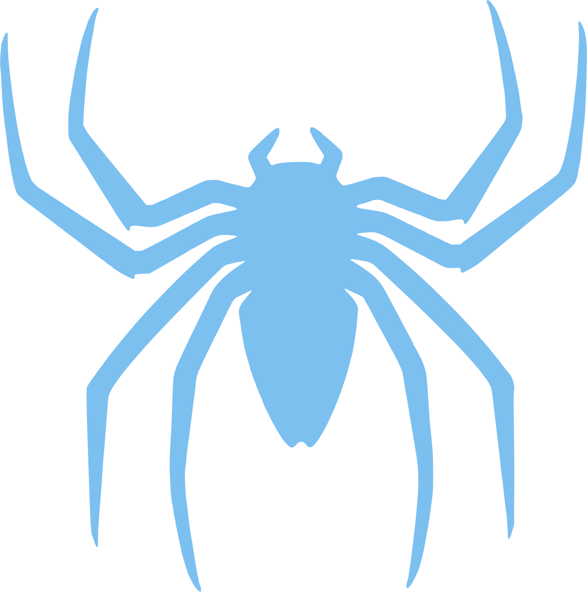
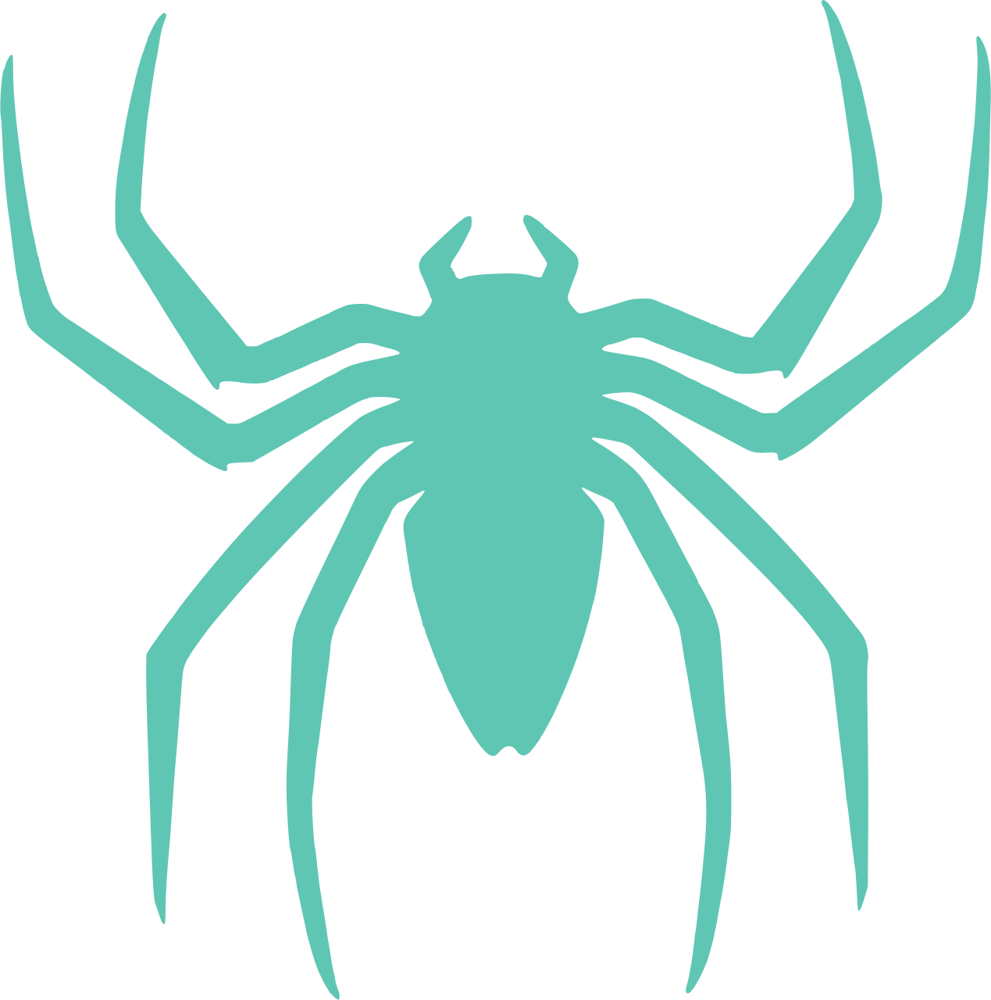
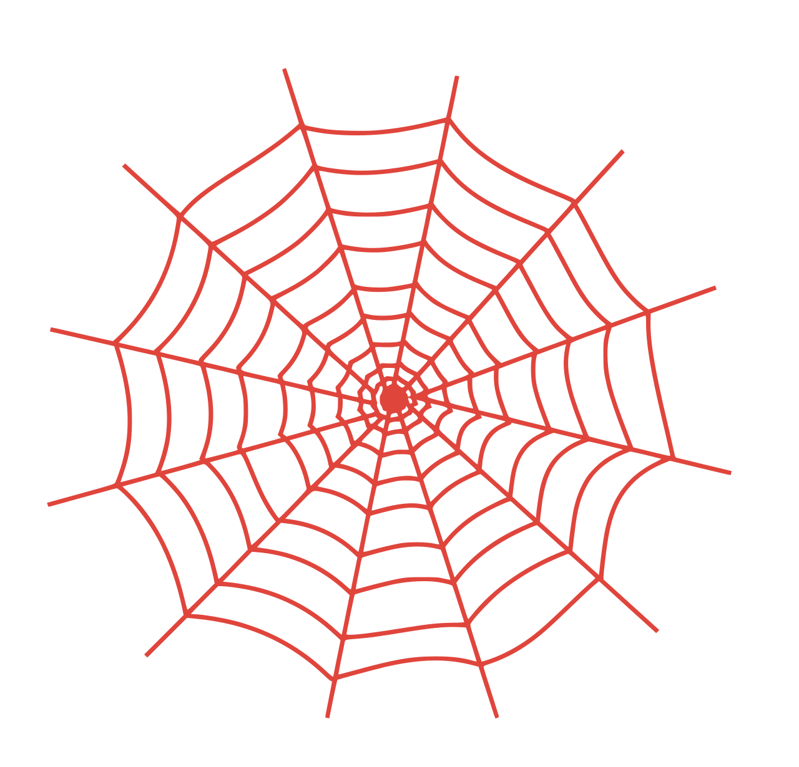

── index
orgs
2
longest
36 mo
years active
2022 – 2026
~/employment-records
sort mtime desc · filter *.md · hidden 0
{{ row.cursor }}
{{ row.name }}
{{ row.orgTag }}
.rw-r--r--
{{ row.size }}
1
EMPLOYMENT RECORDS

{{ node.when }}
{{ node.dur }}
{{ node.state }}
{{ node.pos }}
2
FILE PREVIEW
.rw-r--r--
shev
{{ fileSize }}
{{ filePath }}
{{ lineCount }}
{{ f.k }}
{{ f.v }}
{{ title }}
{{ meta }}
{{ t.name }}
{{ sectionLabel }}
{{ b.text }}
{{ moreNote }}
Session: 10.42.7.13
·
0:dashboard
1:repos
2:employment*
3:retina-v
4:profile
5:help-
↻ reboot
[/] grep
22:26
19-Aug-26